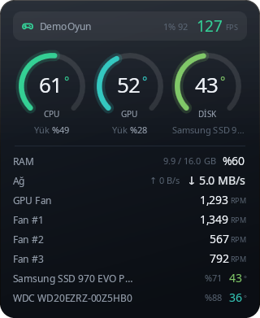
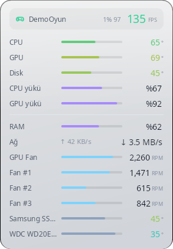

Dört widget'a kadar
Halkalar, liste ya da ekranın kenarında tek satırlık şerit. Her biri ayrı bir yerde, ayrı içerikle durabilir.
- Masaüstünde durur, "Masaüstünü göster"de bile kaybolmaz.
- Hep üstte ya da sadece oyun açıkken öne çıkar.
- Tıklamaları geçirebilir; oyunun üstünde fareye engel olmaz.

